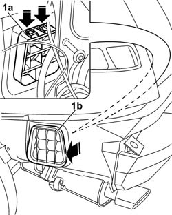

5010C60 LH OR RH REAR AIR OUTLET -ONE- R R
- Path
- Procedures > 50 AUXILIARY UNITS > 5010 HEATING/VENTILATION - MISCELLANEOUS > 5010C AIR OUTLET AND DIFFUSERS > 5010C60 LH OR RH REAR AIR OUTLET -ONE- R R
- Kind
- repair procedure (removal / refitting; the operation number is the code)
- Applies to
- engines: 2.0 JTS, 3.2 V6, 1.9 JTD 16V; all production periods
- Interactive page
- https://sloeber94.github.io/elrnDB-aGt/en/#/125001509
Applies to: engines: 2.0 JTS, 3.2 V6, 1.9 JTD 16V; all production periods
 Removing
Removing
 Refitting
RefittingOp. 4450B06 LEFT REAR WHEEL R R
Op. 4450B08 RIGHT REAR WHEEL R R
Op. 7055B44 LEFT HAND REAR SUPPLEMENTARY WHEEL ARCH - R+R
Op. 7055B45 RIGHT HAND REAR SUPPLEMENTARY WHEEL ARCH - R+R
Op. 7040B10 LOAD PLATFORM (LUGGAGE PLATFORM) TRIM - R+R
Op. 7040B22 LUGGAGE COMPARTMENT/LOAD PLATFORM MOULDING - R+R
Op. 7050A22 REAR SEAT CUSHION - R+R
Op. 7050A14 SPLIT REAR SEAT ASSEMBLY - R+R
Op. 7040G30 BOOT LIGHT BULB HOLDER - R R
(right side)
Op. 7065C86 BOOT/LOAD PLATFORM POWER UNIT HOUSING - R R
(left side)
Op. 5570T85 CD/AUDIO PLAYER LOADER - R R
(left side)
Op. 7040B35 One luggage compartment COMPARTMENT left or right RR
Op. 7040B06 SIDE TRIM (ONE) LH OR RH, LOAD COMPARTMENT/LOAD PLATFORM - R R
(right and left sides)
1. Press by the retaining tabs (1a) and remove the rear vent (1b) from the outside of the vehicle.

Applies to: engines: 2.0 JTS, 3.2 V6, 1.9 JTD 16V; all production periods
Refitting
RemovingPress-fit the rear vent attaching the retaining tabs.
Op. 7040B06 SIDE TRIM (ONE) LH OR RH, LOAD COMPARTMENT/LOAD PLATFORM - R R
(right and left sides)
Op. 7040B35 One luggage compartment COMPARTMENT left or right RR
Op. 5570T85 CD/AUDIO PLAYER LOADER - R R
(left side)
Op. 7065C86 BOOT/LOAD PLATFORM POWER UNIT HOUSING - R R
(left side)
Op. 7040G30 BOOT LIGHT BULB HOLDER - R R
(right side
Op. 7050A14 SPLIT REAR SEAT ASSEMBLY - R+R
Op. 7050A22 REAR SEAT CUSHION - R+R
Op. 7040B22 LUGGAGE COMPARTMENT/LOAD PLATFORM MOULDING - R+R
Op. 7040B10 LOAD PLATFORM (LUGGAGE PLATFORM) TRIM - R+R
Op. 7055B44 LEFT HAND REAR SUPPLEMENTARY WHEEL ARCH - R+R
Op. 7055B45 RIGHT HAND REAR SUPPLEMENTARY WHEEL ARCH - R+R
Topics linked from this page (15)
- 4450B06 LEFT REAR WHEEL R R
- 4450B08 RIGHT REAR WHEEL R R
- 5570T85 CD/AUDIO PLAYER LOADER - R R
- 7040B06 SIDE TRIM (ONE) LH OR RH, LOAD COMPARTMENT/LOAD PLATFORM - R R
- 7040B10 LOAD PLATFORM (LUGGAGE PLATFORM) TRIM - R+R
- 7040B22 LUGGAGE COMPARTMENT/LOAD PLATFORM MOULDING - R+R
- 7040B35 One luggage compartment COMPARTMENT left or right RR
- 7040G30 BOOT LIGHT BULB HOLDER - R R
- 7040H80 PARCEL RACK
- 7050A14 SPLIT REAR SEAT ASSEMBLY - R+R
- 7050A22 REAR SEAT CUSHION - R+R
- 7055B44 LEFT HAND REAR SUPPLEMENTARY WHEEL ARCH - R+R
- 7055B45 RIGHT HAND REAR SUPPLEMENTARY WHEEL ARCH - R+R
- 7065C86 BOOT/LOAD PLATFORM POWER UNIT HOUSING - R R
- 7210E66 REAR BUMPER